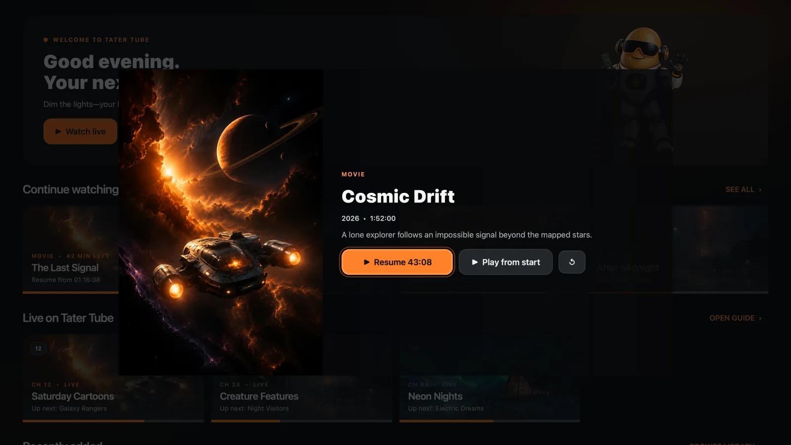
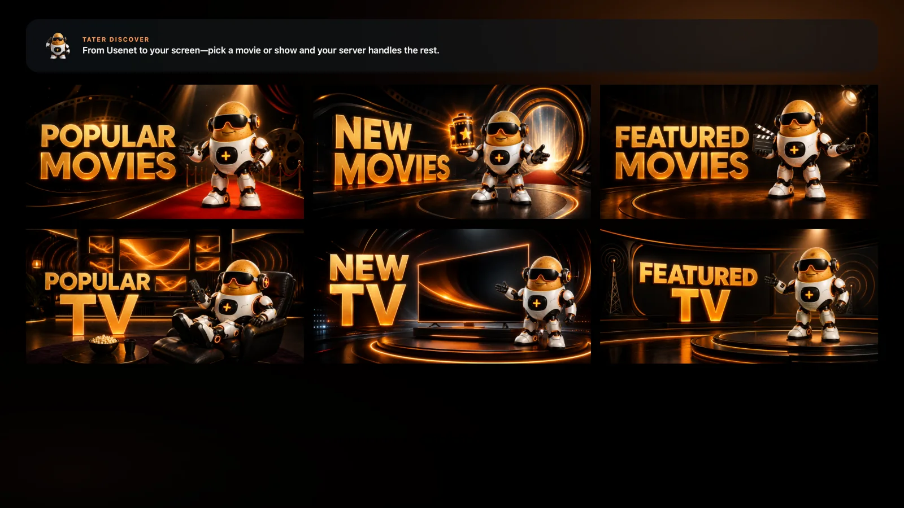
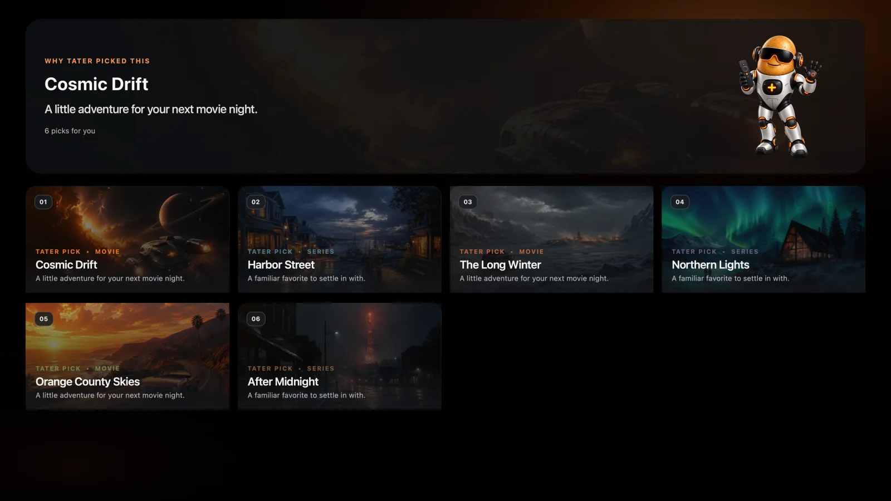
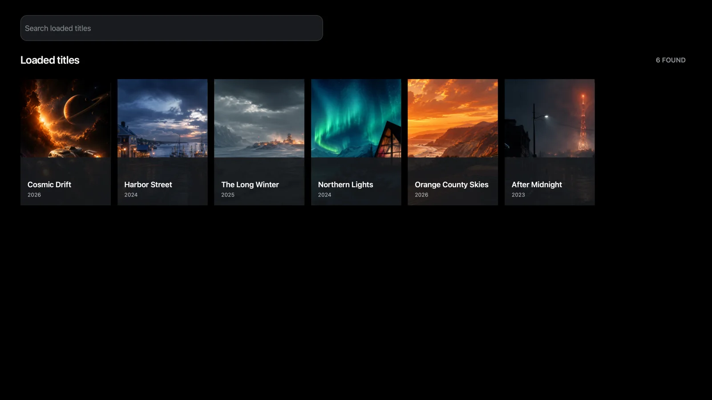

Pair in a few steps
Enter the server address and six-digit PIN, then keep the paired player ready for the next session.
Six-digit PINNamed players
Browse your library, pick up where you left off, discover something new, or tune into Live TV—all through a controller-first player powered by Tater Tube Server.

The Steam prototype already connects to a real Tater Tube Server and covers the main living-room journey.
Enter the server address and six-digit PIN, then keep the paired player ready for the next session.
Browse local collections, folders, shows, seasons, and discovery feeds with incremental results.
Load saved positions and report progress while movies and episodes play.
Tune into server-built Tube TV with now/next information and scheduled breaks preserved.
Play compatible media directly, then fall back to audio-only or full H.264 transcoding when needed.
Use controller, keyboard, remote-style focus, or touch with clear states and auto-hiding playback controls.
These in-development previews show the latest library, details, Discovery, Tater Picks, Live TV, and search experience running in the Steam build.






Steam, Apple TV, and Google TV use platform-specific interfaces while Tater Tube Server remains the source of truth for catalogs, artwork, playback plans, streams, live schedules, and progress.